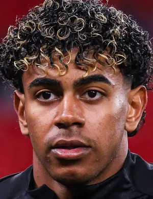

FWDLamine Yamal
Right Winger
Spain 🇪🇸
| Born | 16 July 2007 |
|---|---|
| Nationality | Spanish |
| Position | Right Winger |
| Joined Barça | 2010 (La Masia) |
| Club Since | Academy |
Born in Esparreguera, Catalonia, Lamine Yamal joined Barcelona's La Masia academy at age three. He made his professional debut at just 15 years old in April 2023, becoming one of the youngest players ever to appear for the club's first team.
In the 2023–24 season, he was instrumental in Barcelona's campaign, drawing comparisons to Lionel Messi for his dribbling ability, creativity, and composure. At just 16, he represented Spain at UEFA Euro 2024, scoring a stunning equaliser in the semi-final against France.
He is widely considered the most exciting young talent in world football. His pace, skill, and confidence on the ball — combined with the maturity of a veteran — make him truly exceptional.